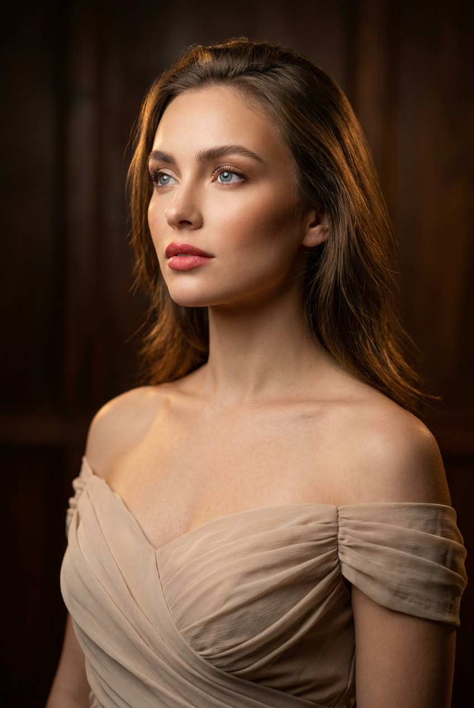
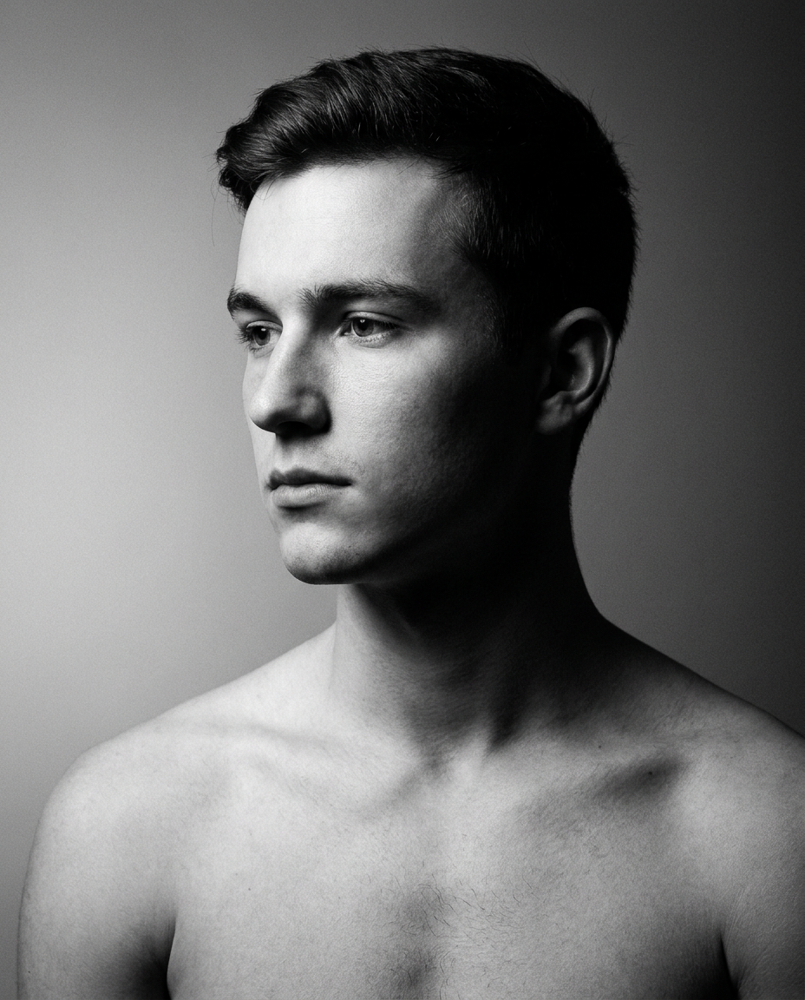
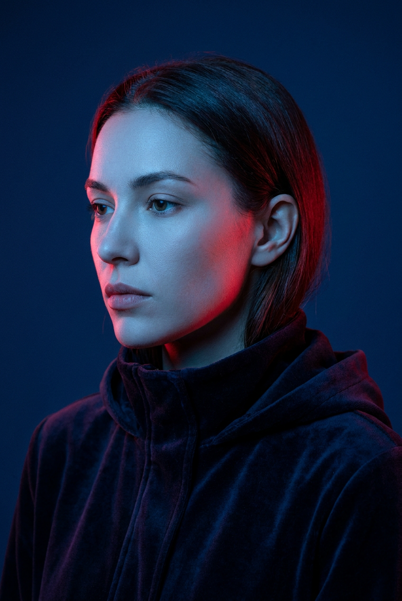
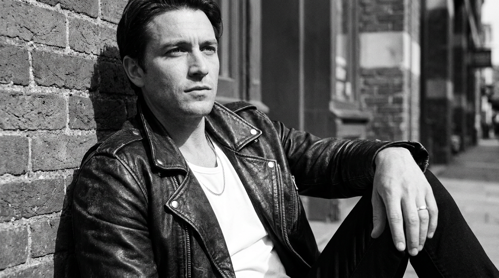
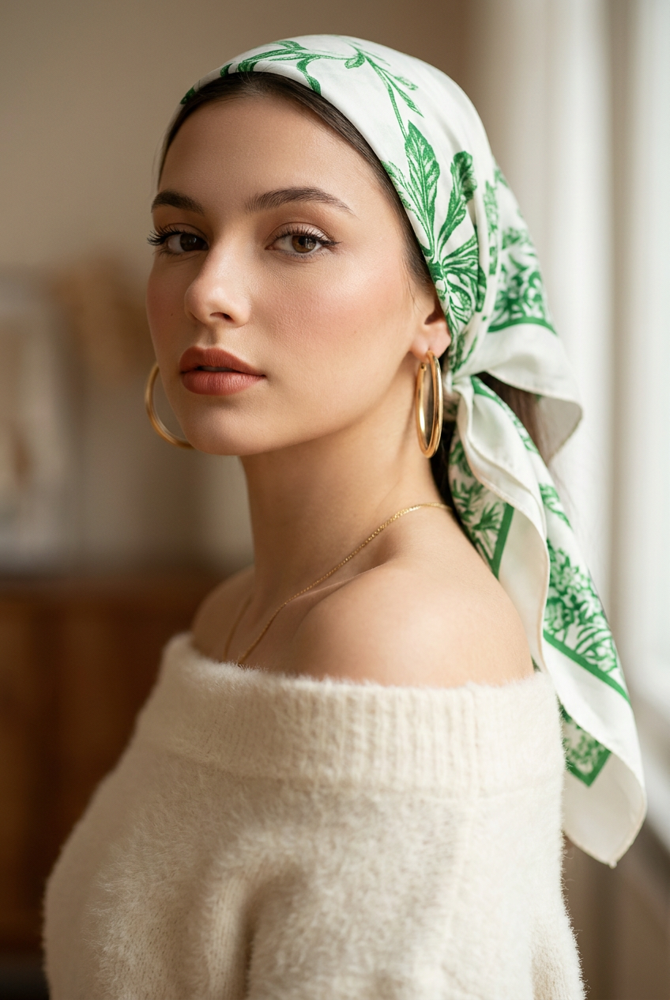
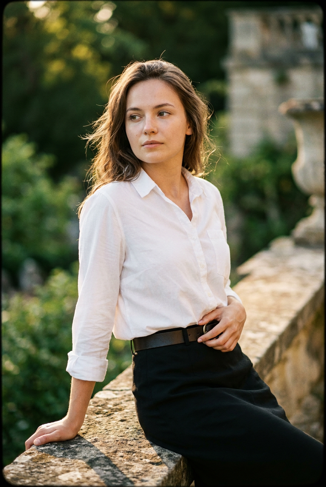
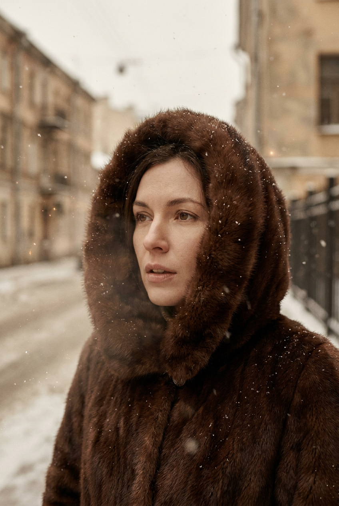
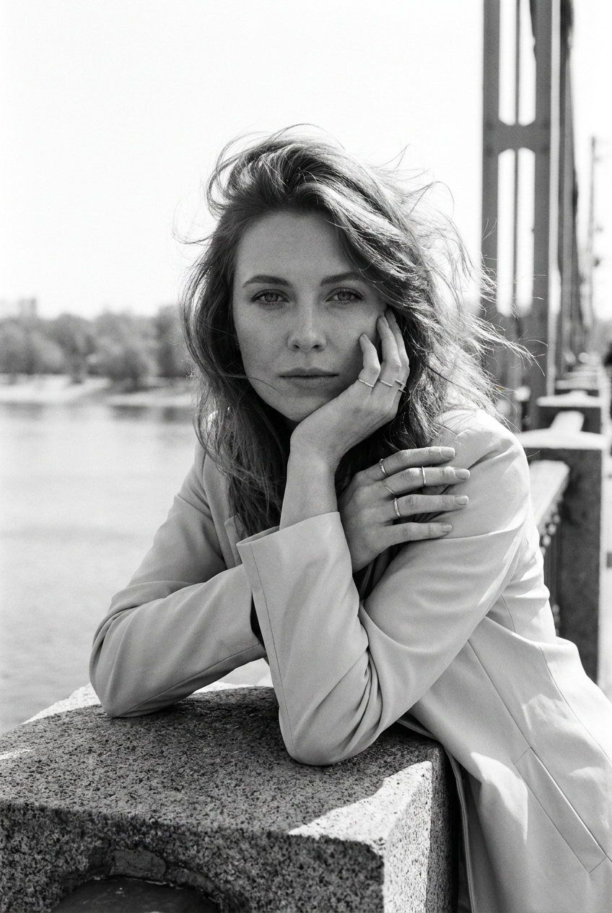
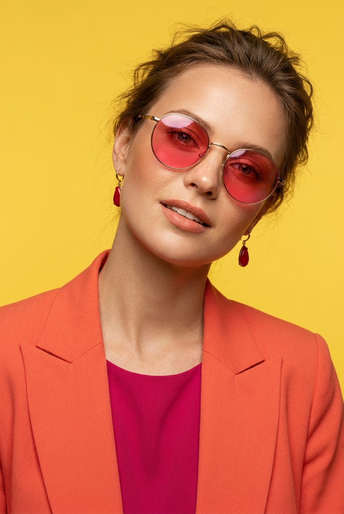
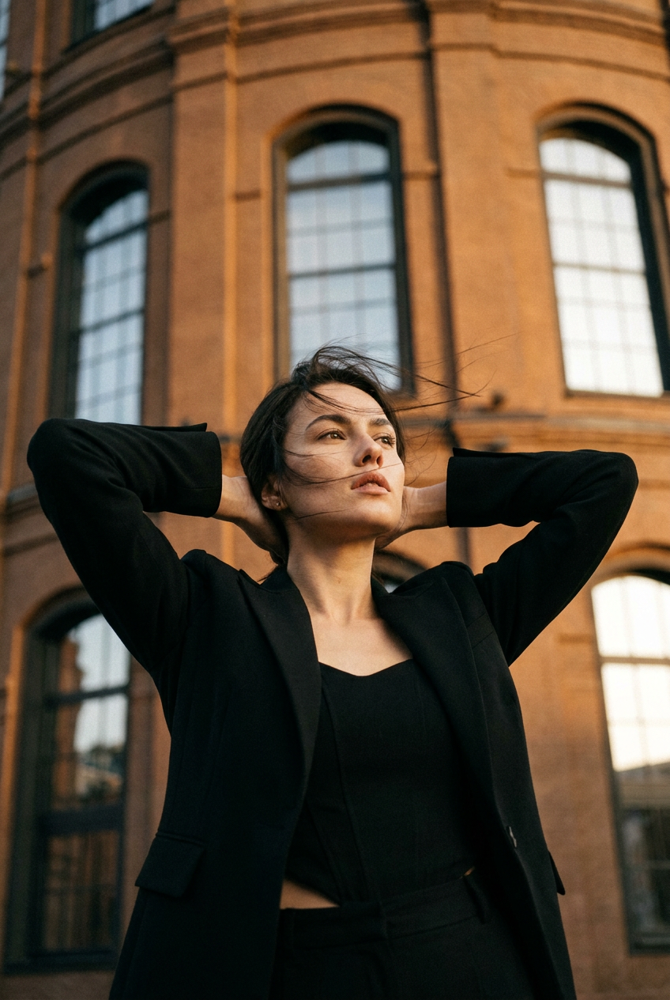

ИИ-портрет: 10 промптов для нейросети

Обычный запрос вроде «сделай красивый портрет» редко даёт предсказуемый результат: нейросеть меняет черты лица, путает руки и игнорирует детали одежды. Точный промпт помогает заранее задать позу, свет, композицию и настроение кадра.
В подборке — 10 сценариев для ИИ-портрета: от лаконичной студийной съёмки и винтажной плёнки до неонового киберпанка, уличного fashion-кадра и чёрно-белой фотографии. Используйте их с референсом лица и меняйте отдельные параметры под себя.
Как сгенерировать такое фото: пошагово
Нужен снимок анфас при ровном свете, лицо в кадре целиком, без тёмных очков и головных уборов. Разрешение от 1000 пикселей по короткой стороне. Чем чётче исходник, тем точнее модель повторит черты.
Выберите сценарий ниже и нажмите «Копировать» — текст уйдёт в буфер целиком, вместе с командой сохранения внешности. Эта команда стоит первой строкой и отвечает за то, чтобы на выходе было ваше лицо, а не случайное.
Кнопка «Сгенерировать» рядом с каждым промптом открывает модель в новой вкладке. Nano Banana Pro работает с референсом лица — в отличие от моделей, которые генерируют портрет с нуля и узнаваемость теряют.
Промпт — в поле ввода, портрет — через загрузку референса. Порядок значения не имеет, но без референса команда сохранения внешности работать не будет: модели нечего сохранять.
Для сторис и ленты берите 9:16, для превью и обложек — 4:3. Первый результат редко идеален: если поза или свет ушли не туда, поправьте соответствующую часть промпта и запустите заново. Обычно хватает двух-трёх итераций.
10 промптов для генерации
1. Светлый студийный портрет
Строго сохранить внешность по загруженному референсу: черты лица, пропорции, мимику и текстуру кожи без изменений. Вертикальный фотореалистичный студийно-кинематографичный портрет женщины, кадр по плечи с частью груди и открытыми плечами. Лицо ориентировано на загруженный референс: сохранить форму глаз, бровей, носа, губ, овал, пропорции и естественную мимику. Голова в повороте 3/4 влево, подбородок немного поднят, взгляд уходит вверх и в сторону от камеры. Кожа светлая, с живой текстурой и мягким свечением, без пластикового эффекта. Макияж аккуратный: тёплый лёгкий контур, румянец, выразительные брови, светлые тени, тушь и подчёркнутые ресницы; губы розово-коралловые или нежно-розовые, полуматовые. Глаза светло-голубые. На модели пастельно-бежевое или молочное платье из тонкой ткани, открывающей плечи; мягкие полупрозрачные складки собраны у декольте. Мягкий кинематографичный студийный свет, натуральная цветопередача, высокая детализация кожи.
2. Монохромный мужской портрет

Строго сохранить внешность по загруженному референсу: черты лица, пропорции, мимику и текстуру кожи без изменений. Фотореалистичная чёрно-белая студийная фотография молодого мужчины, вертикальная или квадратная композиция, крупный кадр от плеч. Черты лица повторяют загруженный референс без изменения формы глаз, бровей, носа, губ, овала и пропорций. Корпус и голова развёрнуты влево, положение между профилем и 3/4; взгляд направлен вдаль, немного вниз, не в объектив. Выражение спокойное, губы расслаблены, улыбки нет. Естественные брови, реалистичные блики в глазах, натуральная фактура кожи без ретуши до пластика. Мягкие тени подчёркивают скулы и линию челюсти. Плечи, шея и верх груди открыты либо прикрыты минимальной накидкой, без заметных аксессуаров и деталей. Использовать выразительный студийный свет с мягким переходом от света к тени, глубокие серые полутона, чистый фон и редакционную лаконичность.
3. Неоновый портрет в 3/4

Строго сохранить внешность по загруженному референсу: черты лица, пропорции, мимику и текстуру кожи без изменений. Вертикальный фотореалистичный beauty-портрет женщины крупным планом, в кадре голова и плечи. Лицо точно соответствует загруженному референсу: без изменения индивидуальных черт, пропорций, овала, формы глаз, бровей, носа и губ. Голова развёрнута влево на три четверти, взгляд направлен в сторону и слегка вниз, выражение серьёзное и спокойное. Макияж минимальный: ровная светлая кожа с натуральной текстурой, естественные брови, тонкие тени, нейтральные розово-телесные губы с матовым финишем. На модели тёмная куртка или худи с высоким воротом из плотной матовой ткани, ворот прилегает к шее. Съёмка в эстетике low-key и неонового киберпанка: холодный синий свет заливает половину лица и фон, насыщенный красный контровой или боковой источник очерчивает силуэт и вторую сторону лица. Контрастный цветной свет, глубокие тени, точная детализация кожи, fashion-редакционная атмосфера.
4. Уличный портрет в коже

Строго сохранить внешность по загруженному референсу: черты лица, пропорции, мимику и текстуру кожи без изменений. Горизонтальный фотореалистичный чёрно-белый street-фотопортрет мужчины у стены здания. Модель сидит или расслабленно прислоняется к стене, корпус слегка развёрнут, ноги частично попадают в кадр; один локоть опирается на поверхность или рука лежит на колене. Лицо в повороте 3/4 влево, взгляд направлен мимо камеры, будто мужчина наблюдает за чем-то вдали. Настроение спокойное и сосредоточенное. Сохранить по референсу форму глаз, бровей, носа, губ, овал лица, мимику и пропорции. Брови средней густоты, кожа с реалистичной текстурой, мягкими тенями на скулах и вокруг носа, губы без стилизации. На нём чёрная или очень тёмная матовая кожаная куртка с заметной фактурой, молнией, пуговицами или заклёпками на лацканах; под курткой белая футболка. Естественный уличный свет, выразительный монохром, документальная композиция, высокая детализация ткани и кожи.
5. Портрет с платком

Строго сохранить внешность по загруженному референсу: черты лица, пропорции, мимику и текстуру кожи без изменений. Вертикальный фотореалистичный fashion-портрет женщины по грудь, крупный план, голова в повороте 3/4 с лёгким наклоном, взгляд направлен в сторону камеры. Черты лица взять с загруженного референса и сохранить естественные пропорции, форму глаз, бровей, носа, губ и овал. Кожа чистая, но живая, без эффекта пластика; макияж аккуратный: выразительные ресницы, тонкая подводка, мягкий румянец и тёплые губы с матовым или сатиновым финишем. На ушах крупные золотые серьги-кольца, на шее тонкая золотая цепочка. Белый платок с ярким зелёным растительным орнаментом завязан на голове, ткань мягко драпируется, концы лежат на плече. Одежда — светлый кремовый или молочный искусственный мех либо пушистый шерстяной свитер с открытыми плечами, подробно показать волокна и фактуру. Модель размещена слева или по центру, мягкий fashion-свет, нейтральный фон, редакционная цветокоррекция.
6. Прогулка у каменной стены

Строго сохранить внешность по загруженному референсу: черты лица, пропорции, мимику и текстуру кожи без изменений. Вертикальная фотореалистичная уличная портретная фотография женщины в саду или парке. Модель сидит на каменной ограде или низкой стене, корпус слегка повёрнут вправо; одна рука лежит на верхней кромке, второй она придерживает край чёрной юбки или платья либо ремень у талии. Голова развёрнута на три четверти, взгляд уходит в сторону чуть мимо камеры, выражение задумчивое и спокойное, без улыбки. Сохранить по загруженному референсу индивидуальные черты, форму глаз, бровей, носа, губ, овал и пропорции лица. Волосы слегка растрёпаны ветром, в глазах естественные блики. Макияж почти незаметный: ровный тон, лёгкий румянец, тушь и деликатные тени, матовые розово-нюдовые губы. На модели белая рубашка с воротником, тонкая и естественно сидящая по фигуре, в сочетании с чёрной юбкой или платьем. Мягкий дневной свет, натуральный парк на фоне, реалистичная ткань и камень.
7. Винтажный зимний образ

Строго сохранить внешность по загруженному референсу: черты лица, пропорции, мимику и текстуру кожи без изменений. Вертикальный фотореалистичный портрет в духе винтажной плёночной фотографии 1960–1970-х годов, крупный план лица и верхней части фигуры. Женщина одета по-зимнему: коричнево-шоколадный меховой головной убор в форме шапки или капюшона и меховое пальто либо накидка с плотной выразительной фактурой. Мех образует мягкую рамку вокруг лица. Поза расслабленная, голова немного развёрнута в 3/4, взгляд направлен вдаль, не в объектив; губы нейтрально сомкнуты или слегка приоткрыты, выражение тихое и задумчивое. Черты лица и пропорции точно повторяют загруженный референс. Кожа с тонким естественным румянцем от холода, глаза выразительные, брови натуральной формы. Макияж сдержанный: ровный тон, лёгкие нейтрально-коричневые тени, естественные губы. Добавить зерно плёнки, мягкую слегка выцветшую цветопередачу, тёплые коричневые оттенки, деликатный контраст и ощущение старого зимнего снимка.
8. Редакционный кадр у перил

Строго сохранить внешность по загруженному референсу: черты лица, пропорции, мимику и текстуру кожи без изменений. Вертикальная фотореалистичная чёрно-белая уличная фотография женщины по грудь или до локтей. Она стоит или сидит у каменных мостовых перил, опираясь локтями на гранитную плиту переднего плана. Корпус немного развёрнут, лицо обращено к камере, взгляд спокойный и задумчивый. Одна рука поддерживает подбородок или щёку, пальцы второй переплетены у губ либо под подбородком; в жесте есть лёгкое напряжение, но без театральной драмы. Волосы объёмно развеваются ветром, отдельные пряди торчат вверх и в стороны. Сохранить по референсу индивидуальное лицо, форму глаз, бровей, носа, губ, овал и естественную мимику. Брови аккуратные, в глазах реалистичные блики, кожа с натуральной текстурой. Макияж сдержанный, губы нейтральные, без яркого цвета. Мягкий рассеянный дневной свет, выразительные серые полутона, детализированный гранит, редакционная street-fashion подача.
9. Мягкий летний fashion-портрет

Строго сохранить внешность по загруженному референсу: черты лица, пропорции, мимику и текстуру кожи без изменений. Вертикальный фотореалистичный fashion/beauty-портрет женщины по грудь или по пояс, камера на уровне лица. Модель сидит или стоит расслабленно, плечи слегка расправлены, голова чуть наклонена вправо, взгляд прямо в объектив, на лице лёгкая естественная улыбка. Лицо точно соответствует загруженному референсу: сохранить овал, пропорции, форму глаз, бровей, носа, губ и живую мимику. Кожа имеет настоящую текстуру, мягкое ровное покрытие без пластика, небольшой румянец на щеках. Брови средней густоты и натуральной формы, в зрачках заметны естественные отражения. Дневной летний макияж: тёплые лёгкие тени, тушь, тонкий контур, розово-нюдовые или розово-персиковые губы с полуматовым финишем. Волосы живые, слегка растрёпанные, с отдельными тонкими прядями, но без беспорядка. Мягкий чистый свет, спокойный нейтральный фон, натуральная цветопередача, журнальная детализация.
10. Портрет на фоне кирпича

Строго сохранить внешность по загруженному референсу: черты лица, пропорции, мимику и текстуру кожи без изменений. Вертикальная фотореалистичная уличная fashion-съёмка женщины перед большим кирпичным зданием с арочными окнами. Камера расположена ниже уровня глаз и направлена вверх, поэтому стены и окна занимают большую часть композиции; фон мягко уходит в перспективу. Модель стоит в центре или правее кадра, корпус развёрнут на три четверти вправо. Обе руки подняты и заведены за голову, локти широко разведены, кисти находятся у затылка. Голова слегка откинута назад, взгляд направлен вверх и в сторону от камеры, выражение уверенное, спокойное и немного мечтательное. Волосы подхвачены ветром: у лица и на концах видны развевающиеся пряди. Сохранить по загруженному референсу черты лица, пропорции, овал, форму глаз, бровей, носа и губ. Одежда современная fashion без лишних деталей, естественная посадка ткани. Дневной уличный свет, мягкие тени на кирпиче, реалистичная архитектурная фактура, широкоугольная перспектива без искажённого лица.
Что важно учесть в этом стиле
ИИ-портрет держится на трёх слоях описания: лицо и выражение, постановка кадра, свет с фактурами. Сначала задайте дистанцию — крупный план, по грудь или по пояс, — затем положение головы и направление взгляда. Так модель меньше путает композицию.
Для реалистичного результата отдельно прописывайте кожу, волосы, ткань и фон. Формулировка «натуральная текстура кожи без пластика» полезнее, чем просто «красивая кожа». Если нужен редакционный кадр, добавьте объектив 85 мм для портрета или 35 мм для уличной сцены, диафрагму f/2–f/4 и вертикальное соотношение 4:5.
Идеи для вариаций
- Замените холодный синий и красный свет на янтарный контровой и зелёный фон.
- Перенесите портрет у каменной стены в старый двор с лестницей и коваными перилами.
- Для винтажной версии добавьте формат 35 мм, зерно ISO 800 и лёгкие засветки по краям кадра.
- Поменяйте кожаную куртку на тренч, шерстяное пальто или джинсовую куртку.
- Сделайте серию из пяти кадров, меняя только направление взгляда и положение рук.
Как собрать свой промпт
Начните с типа снимка и кадрирования: «вертикальный портрет по грудь», «горизонтальная street-фотография» или «крупный beauty-кадр». Следом укажите позу, поворот головы, взгляд и эмоцию. После этого опишите внешность, одежду, аксессуары, локацию и свет.
В конце добавьте технические параметры: соотношение сторон 4:5 или 2:3, объектив 85 мм для спокойного портрета, 35 мм для архитектуры, f/2.8 для размытого фона, реалистичную фактуру кожи и высокое разрешение. Меняйте за один подход не больше двух деталей и сохраняйте удачный seed, если сервис его поддерживает.
Ошибки, из-за которых кадр не получается
- Слишком общий запрос. Слово «красивый» не задаёт ни позу, ни свет, поэтому описывайте измеримые детали кадра.
- Противоречивый свет. Не просите одновременно мягкий равномерный свет и жёсткие глубокие тени без уточнения источников.
- Перегруженная композиция. Если в сцене много предметов, лицо и одежда начинают терять детализацию.
- Непонятная анатомия рук. Описывайте каждую руку отдельно и не задавайте сложные жесты в первом варианте.
- Чрезмерная ретушь. Добавляйте натуральную текстуру кожи, поры, мелкие пряди и реалистичные блики в глазах.
Частые вопросы
Как сделать такое ИИ-фото бесплатно?
Можно попробовать Kandinsky и Шедеврум: они подходят для базовых портретов и обычно позволяют начать без оплаты, но точность сходства с референсом и число доступных генераций ограничены. Krea AI и Arena.ai удобны для экспериментов и сравнения результатов, однако доступность функций меняется. Для точного лица загружайте качественный референс анфас, проверяйте правила обработки изображений и не рассчитывайте, что бесплатный режим стабильно повторит черты с первой попытки.
Как добиться сходства с человеком на фото?
Используйте чёткий референс без очков, сильных теней и фильтров. В промпте перечислите форму глаз, носа, губ, овал лица и мимику, а не только цвет волос. Сначала сгенерируйте нейтральный портрет, затем меняйте одежду, свет и фон. Если сервис поддерживает силу референса, начинайте со среднего значения: слишком сильное влияние может испортить позу, а слабое — лицо.
Какой формат выбрать для ИИ-портрета?
Для аватарки и редакционного портрета подойдёт 4:5, для сторис — 9:16, для постера — 2:3. Уличные сцены с архитектурой лучше смотрятся в вертикали 2:3 или в горизонтальном формате 3:2. Генерируйте минимум 1024 пикселя по короткой стороне, а затем увеличивайте удачный кадр отдельным инструментом.
Почему нейросеть меняет руки, одежду и аксессуары?
Модель хуже справляется с пересекающимися руками, мелкими украшениями и сложными складками ткани. Упростите жест, опишите положение каждой руки, сократите число аксессуаров и не смешивайте несколько стилей одежды. Сделайте 4–8 вариантов с одним и тем же описанием, выберите лучший и исправляйте детали поэтапно.